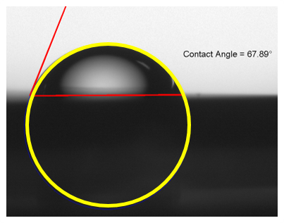

I have developed a useful set of quantitative skills and knowledge over the course of my academic career. You can see highlights of my academic coursework in science and math described below, as well as my various programming proficiences.
Quantitative Coursework
I have Bachelor's degrees in Neuroscience and Physics, and am working on a PhD in Applied Physics. I also have taught undergraduate Chemistry, Biology and Physics for Kaplan Test Prep Company. My background in science is very, very broad. Below is a selection of courses I have taken and what school each was taken at. I earned my Neuroscience degree at Tulane, but was displaced to Middlebury for a semester by Hurricane Katrina. I later attended Indiana University and obtained my baccalaureate in physics, and am currently following it up with a PhD at Yale.
| math | physics | other quantitative |
|---|---|---|
|
|
|
Coding & Markup Languages
I really like learning new languages for coding and markup. When I'm learning a new tool I use some structured materials (books, courses) and also jump right in with small projects - the two approaches complement one another. Below is an overview of the languages I have experience in, and some selected pieces of code and projects.
Python is my language of choice for fun projects. I started learning with the intro course at codeacademy.com created a set of python cliffnotes from it. I'd like to eventually learn web app development using Python as a back-end.
I use MATLAB for all of my data analysis and visualization for my PhD research in. I have used it regularly for the last four years to do a do all sorts of tasks from image analysis to model implementation.
I code all my instrument control and data acquisition routines in C++. I started learning with the Sam's Teach Yourself C++ book - here are my collected C++ notes.
I used R for a probability and statistics course and also for a device fabrication lab which required a lot of data analysis.
For any project of significant size I use Git terminal for version control.
For fun I started learning HTML / CSS / SASS and made this website! For an intro I used the lovely marksheet.io tutorial.
Dielectrophoretic Simulation Library MATLAB
The goal of this code library is to facilitate making predictions regarding DEP forces on particles in different solutions and at different frequencies. This package can be used to model prokaryotic cells with membrane and cell wall, eukaryotic cells or organelles with membrane, and homogeneous solid spheres such as polystyrene beads. Common needs in DEP simulation are comparing CM factor vs. frequency for different particles in the same medium, and calculating crossover frequency vs. conductivity. To increase flexibility of the library I have built independent functions for each of our major particles of interest which will calculate the complex permittivity given an input vector of particle parameters and an input frequency. Different functions are needed for different particles due to modeling shelled vs unshelled and spherical vs non-spherical particles. I have separated the function for finding the complex permittivity of a particle from the function for finding the CM factor to provide for flexibility for those who want to modify the code for different mathematical models of CM factor. I have also used these basic functions to code scripts for some common needs.
Dynamic Hexagon Trio SASS
SASS is amazing - it allows you to use variables and arithmetic operators along with other goodies in writing your CSS. This is the SASS code I used to draw the hexagons on my home page. This SASS + HTML snippet will build a trio of hexagons given input parameters for color, size, and spacing. You can modify the HTML to build other tesselations besides the trio. You will need a SASS interpreter (I use Scout). Also check out the CSS tutorial that taught me how to build these hexagons.
Contact Angle Extraction MATLAB
 The angle that a droplet of liquid (usually water) makes in contact with a surface is a function of the surface properties. For example, you can alter a gold surface on which water will spread rapidly to a hydrophobic surface on which water will bead up, by functionalizing the gold atoms with a monolayer of small organic thiols. The degree to which the water beads up after functionalization tells you how successful your chemistry was. This code takes a set of contact angle images and for each image the program lets you zoom in and three points on the image around the droplet boundary, then the program will do the calculation and draw the chord and tangent lines on the image along with the extracted angle, so you can visually verify that it isn't doing something stupid. After looping through all the images you are prompted with, the program will output a .csv containing the filenames and contact angles in degrees. The program will also plot all the contact angles by sample number for visual inspection.
Electromigration Instrument Control & Data Acquisition C++
Part of the experimental setup on which most of my dissertation research is an instrumentation rack with several different instruments dedicated to different electrical measurements of our devices. We work with a single microfabricated chip at a time, which has a large number of devices on it, and we use a switchbox to switch between electrically interogating different devices with different instruments. All of the switchbox control and measurement routines live in one master executable which was written in C++. The program uses a standard library for the GPIB interface protocol for allowing the operating system to read and write to these instruments.